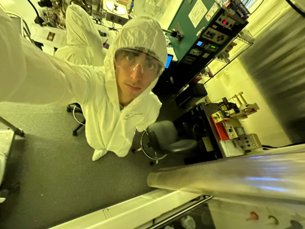
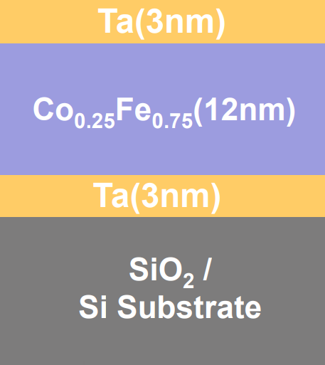
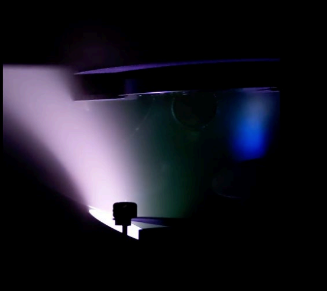

Experimental Investigation of Magnetic Damping in Co–Fe Thin Films
Understanding and controlling magnetic damping in ferromagnetic thin films is important for both spintronic technologies and emerging quantum information platforms. Magnetic damping determines how quickly a magnetic system loses energy and returns to equilibrium. Lower damping enables more efficient magnetic switching and longer-lived spin excitations, which are desirable for applications such as magnetic random-access memory (MRAM) and proposed skyrmion-based quantum devices.
My experimental research focuses on the fabrication and characterization of CoₓFe₁₋ₓ ferromagnetic thin films, a material system that has recently demonstrated unusually low magnetic damping for a metallic ferromagnet. These films are grown using DC magnetron co-sputtering, which allows precise control over film composition and thickness. In this work, cobalt and iron are co-deposited onto silicon substrates to produce films such as Ta/Co0.25Fe0.75/Ta trilayers, where the buffer and capping layers help stabilize the structure and influence the magnetic properties.
For the Ta/Co0.25Fe0.75/Ta trilayer studied here, the magnetic easy axis lies in the plane of the film, and the saturation magnetization of the 11.4 nm Co0.25Fe0.75 layer was measured to be approximately 1.69 × 10³ emu/cm³.
This work establishes a controlled materials platform for studying magnetic damping in metallic ferromagnets. Future experiments using ferromagnetic resonance (FMR) and time-resolved magneto-optical Kerr effect (TR-MOKE) will directly measure the damping parameter and help identify how film composition and interfaces influence magnetic relaxation processes.
Images



Figure 1: Left: Inside the cleanroom. Center: Diagram of the Ta/Co0.25Fe0.75/Ta trilayer structure. Right: DC magnetron sputtering chamber during deposition.